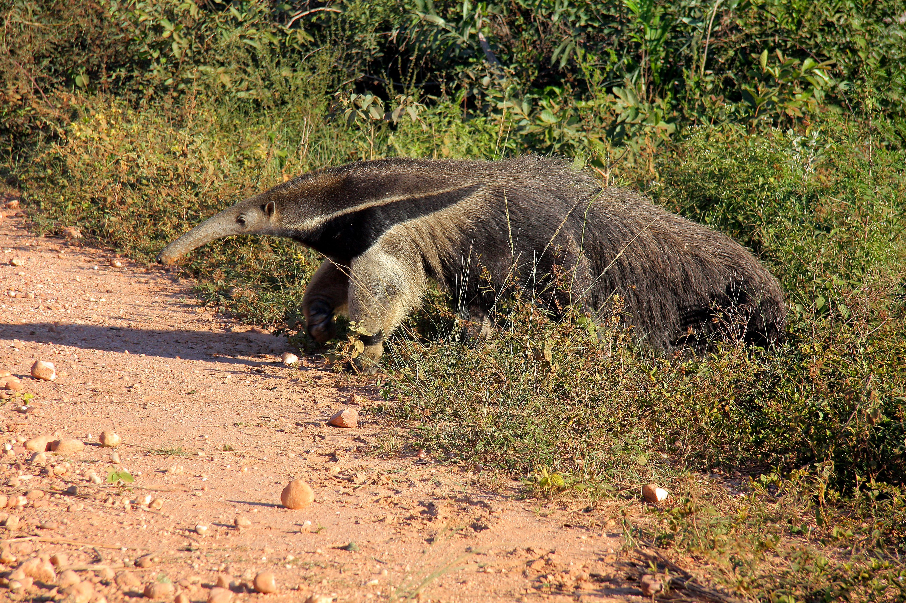

개미핥기류는 홀로 사는 동물로서 공격을 받을 것을 대비해 자주 깨어 있으며, 공격을 받으면 칼날같은 앞발톱으로 대항한다. 개미핥기는 또한 소리를 거의 내지 않는데, 소리를 내는 것은 주로 새끼들이다. 어미의 등에서 떨어진 새끼들은 떨어졌다는 사실을 일깨우기 위해 어미에게 소리를 낸다. 
개미핥기는 공격성이 높지 않고 인간을 보면 도망치는 성향이 강하지만, 심하게 위협을 받을 시 방어 행동으로 날카로운 구겸형의 앞발톱으로 공격하는 일도 있다. 가끔씩 사람을 공격하여 사망시키는 사례도 보고되었다. /위키피디